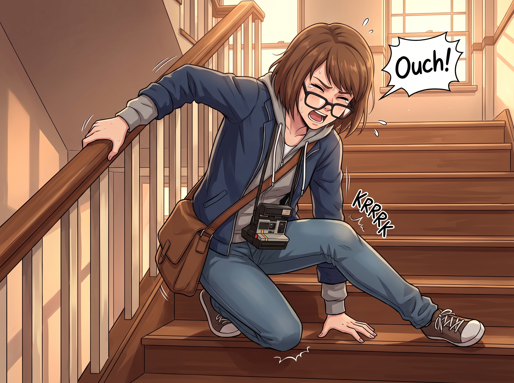

延遲性肌肉酸痛集體破防

清晨七點半，波特蘭東區的工坊二樓樓梯口，上演了一場當代悲慘世界級的「延遲性肌肉酸痛（DOMS）集體大破防」。
昨晚的草本足浴雖然舒緩了腳踝，但深蹲、硬拉與普拉提床在深層肌肉裡埋下的「生化地雷」，在經過一整夜的乳酸堆積後，於清晨徹底引爆。
一、樓梯間的折疊式下樓大賞
Max 剛踏出一隻腳，大腿前側股四頭肌的劇痛讓她膝蓋一軟，整個人「哎呀」一聲直接坐倒在樓梯台階上。她雙手死死抓著扶手，黑框眼鏡滑到鼻尖，只能像隻受傷的小企鵝一樣，手腳並用、一階一階用屁股往下挪。
平日裡不可一世的汽修工 Chloe，此刻背闊肌和臀大肌硬得像兩塊剛出爐的高碳鋼。她雙腿筆直、完全無法彎曲，只能扶著牆壁，以一種極其僵硬的喪屍步伐一卡一頓地下樓，嘴裡還在逞強發出悲鳴：「靠……老娘的下半身……被哪個混蛋用電焊焊死了……」
Victoria 穿著一絲不苟的真絲襯衫，試圖維持最後的名媛儀態。然而當腳尖觸地的瞬間，核心肌群撕裂般的酸痛讓她優雅的面具當場裂開，只能咬緊牙關、整個人半邊身子掛在扶手上，發出極力壓抑的吸氣聲：「這……這絕對是低階器械造成的非人道肌肉創傷……」
只有 Kate 步履輕盈，手裡端著熱毛巾和水壺，像一隻溫柔的大天使在三人身邊來回穿梭，又是揉肩又是攙扶，滿臉心疼：「大家慢一點……深呼吸，乳酸代謝需要一點時間哦。」
二、跨越十五米的工坊長征
好不容易從一號車廂挪到二號貨運車廂門口，這短短十五米的距離，四個人足足走了十分鐘。
由於雙腿實在無法支撐長時間站立，Chloe 索性直接坐在了一台帶滑輪的重型修車底板上，手裡抓著兩根短鐵棍當船槳，在地板上一點一點往前划行。
「考菲爾德長官，抓住老娘的皮帶！」Chloe 坐在滑板上大吼。
Max 毫不猶豫地趴在 Chloe 身後，雙手圈住她的腰，兩個人像一輛超載的迷你平板拖車一樣，在地板上發出「咕嚕咕嚕」的滑輪滾動聲。
Victoria 實在看不下去這種毫無體統的行徑，但酸痛的雙腿讓她連迈步都成問題。最終，在 Kate 溫柔的微笑注視下，名媛大小姐深吸了一口氣，屈辱地扶住了那台原本用來推重型零件的手推車把手，把手推車當成高級助行器，一步一顫地推進了二號車廂。
三、二號車廂的全坐姿硬核打卡
九點整，青年機械教室的開工打卡現場呈現出前所未有的奇觀。
Chloe 乾脆連人帶滑板停在車床前，只動用上半身沒酸痛的肱二頭肌，優雅（且暴躁）地轉動進刀手輪，順便指揮剛進門的學員 Miles：「Miles！今天所有工具搬運全歸你！老娘今天負責『純理論高維度指導』！」
Max 搬來了一張帶軟墊的旋轉矮凳，全程雙腳離地，靠著滑輪在放大機和水槽之間來回滑行，黑框眼鏡後面的眼神充滿了劫後餘生的慶幸。
Victoria 坐在 Kate 特意鋪了三層羊毛墊的藤椅上，腳下墊著熱水袋，優雅地端著黑咖啡，冷冷地用激光筆指向工具牆：「Miles，第三排右邊第二把管鉗擺歪了一度——不要學那兩個在地上滑行的人，維持這裡的秩序。」
Kate 提著黃銅噴壺給入口處的波士頓腎蕨補水，時不時走過來給每個人遞上一片浸透了迷迭香薄荷精油的熱毛巾，笑瞇瞇地宣布：「午餐我熬了滿滿一大鍋高蛋白去皮雞胸肉濃湯哦，下午大家就能恢復活力了！」
車廂外，初秋的晨光灑滿鐵軌；車廂內，滑輪滾動聲、茶杯碰撞聲與女孩們互相打趣的吸氣哀嚎交織在一起，在微涼的清晨裡化作了波特蘭東區最生動、最溫暖的煙火日常。